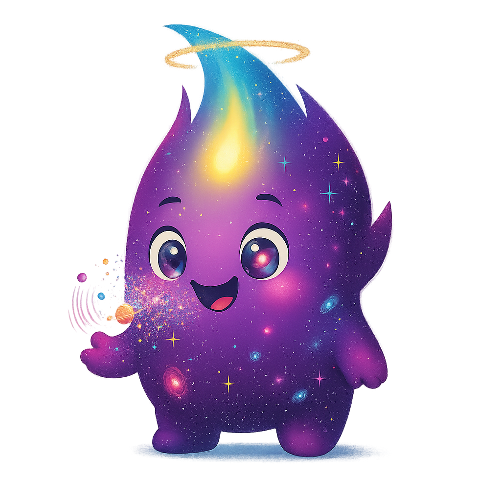

🌾 O GPS na Mesa: A Colheita de Seu José
No vasto e cintilante Sistema Solar, o **Senhor Sol** está sempre ativo, soprando seu Vento Solar e soltando espirros como o Aurelito! ✨

- Aurelito: "Eu sou um espirro de luz! E meu destino afeta o pãozinho na mesa, mas como?"

- Luna (Voz do Cosmos): "Na Terra, agricultores como **Seu José**, nosso idoso e dedicado fazendeiro, usam um ajudante mágico: o **GPS**!" 🛰️
O GPS usa 'carteiros espaciais' (Satélites de GPS) que enviam mensagens rápidas sobre a localização exata! ✉️